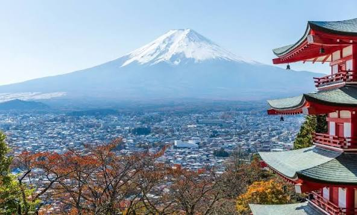

Sobre o aluno
Nome: Kauã Ribeiro Sales
Turma: 2ºF
O lugar dos meus sonhos
Nome do lugar: Japão
Por que quero conhecer esse lugar?
Quero visitar o Japão para ver os mangas, animes, jogar jogos que só tem no japão, produtos exclusivos e eventos que tem no país.
Ver e comprar as novas tecnologias que estão sendo desenvolvidas.
Expericiar a cultura do país, culinária e pontos turisticos.

Curiosidades sobre esse lugar
- Paisagem Oriental (Como templos, Monte Fuji)
- Tranporte muito rápido com trens balas
- Tecnológia avançada